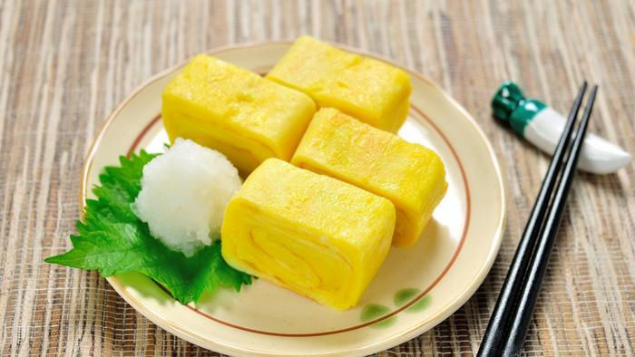

Home

Tamagoyaki (Telur gulung jepang)
Bahan
- 3 Butir telur
- 1 sdt kecap asin
- 1/2 sdt gula
- 1 sdm air
- Minyak sayur
Cara
- Kocok telur, kecap asin, gula, dan air.
- Panaskan wajan dan lapisi dengan minyak tipis.
- Tuang 1/3 telur, gulung perlahan saat setengah matang.
- Ulangi sampai telur habis.
Variasi